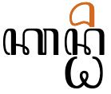
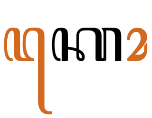
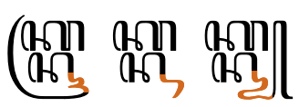
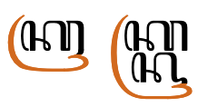
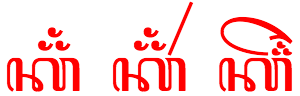
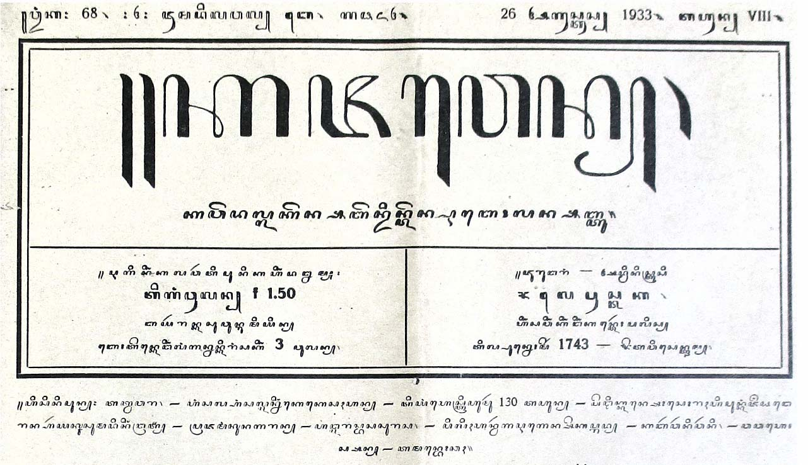
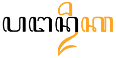
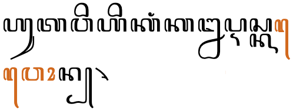

This page gathers basic information about the Javanese script and its use for the Javanese language. It aims (generally) to provide an overview of the orthography and typographic features, and (specifically) to advise how to write Javanese using Unicode.
Phonetic transcriptions on this page should be treated as an approximate guide, only. Many are more phonemic than phonetic, and there may be variations depending on the source of the transcription.
Note: There are currently difficulties in finding a workable Unicode font for Javanese. The original Noto Sans Javanese font uses shapes that are over-simplified for some Javanese users but the latest version is better, and the often recommended font, Tuladha Jejeg, is based on Graphite technology, and so only works on Firefox with Graphite rendering enabled (ie. not on iOS). The default webfont for this page is a Tuladha Jejeg webfont. If not using Firefox, you can switch between fonts using the vertical blue bar, bottom right.
Sample (Javanese)
Select part of this sample text to show a list of characters, with links to more details. Change size: 28px
Note: ZWSP has been added between orthographic syllables in the above text in order to allow the text to wrap. The major browsers don't wrap it automatically.
Usage & history
Use of the Javanese script ended abruptly during the Second World War, when its use was forbidden by the occupying forces. Its use has since declined, and everyday Javanese is now generally written in the Latin script, although the Javanese orthography is still taught in most elementary schools and some junior high schools in Javanese speaking areas. There are no newspapers or magazines being printed in the Javanese script.
The Javanese script derives from the ancient Brahmi script, via Old Kawi. It is the pre-colonial script of the Javanese language spoken on the Indonesian islands of Java and Bali and is used to write the Tengger and Osing languages, also spoken in Java and Bali. Historically it was also used to write the Bali language, which is now written largely in the Latin and the (closely related) Balinese scripts, and the Sunda language, which is now written in the Latin and Arabic scripts.
Numerous efforts to standardize the script were made in the late 19th to early 20th-century, with the invention of the script's first metal type and the development of concise orthographic guidelines.
Javanese is an abugida, ie. consonants carry an inherent vowel sound that is overridden, where needed, using vowel signs. In Javanese, consonants carry an inherent vowel, which can be a or o. See the table to the right for a brief overview of features of the modern Javanese orthography.
Javanese text runs left to right in horizontal lines.
Words are not separated by spaces, however syllables may be separated by ZWSP, as long as they don't fall inside a stack. Spaces may be used to separate phrases.
The 20 consonant letters used for pure Javanese words are supplemented by 1o more which are used as honorifics, a little like capital letters, and 5 more used in Sanskrit words. Repertoire extensions for 8 non-native sounds are achieved by applying the cecak telu diacritic to characters.
Consonant clusters are represented by stacked consonants (many subjoined consonants have alternative shapes) or conjoined pairs. Occasionally, a visible pangkon is used.
Stacked consonants and conjoined pairs span word boundaries.
Syllable-initial clusters use 3 dedicated combining marks for the second consonant.
Word-final consonant sounds may be represented by 4 dedicated combining marks. Otherwise, if nothing follows, they are ordinary consonants followed by a visible ꧀ [U+A9C0 JAVANESE PANGKON].
The Javanese orthography has 2 inherent vowels, and represents vowels using 5 vowel-signs (including 1 prescript). All vowel-signs are combining marks, and are stored after the base character. It is mandatory for 2 of the consonant+vowel sequences to be written using vocalics, rather than vowel-signs.
Independent vowels are used for standalone vowel sounds when there is a need to distinguish normal words from proper nouns or foreign words. The normal approach for standalone vowels is to apply vowel-signs to ꦲ [U+A9B2 JAVANESE LETTER HA].
Only one composite vowel is used in modern Javanese orthography, although more exist when writing Sanskrit or Kawi in this script. There are no circumgraphs. The composite vowel used in modern Javanese involves only 2 vowel-signs, and places glyphs on either side of the base consonant(s).
Javanese has vocalics.
Character index
Letters
Show
Basic consonants
ꦥ␣ꦧ␣ꦠ␣ꦢ␣ꦛ␣ꦝ␣ꦏ␣ꦒ␣ꦕ␣ꦗ␣ꦱ␣ꦲ␣ꦩ␣ꦤ␣ꦚ␣ꦔ␣ꦮ␣ꦫ␣ꦭ␣ꦪ
Murda consonants
ꦦ␣ꦨ␣ꦡ␣ꦑ␣ꦓ␣ꦖ␣ꦟ␣ꦘꦯ␣ꦬ
Mahaprana consonants
ꦣ␣ꦜ␣ꦞ␣ꦙ␣ꦰ
Independent vowels
ꦆ␣ꦈ␣ꦌ␣ꦎ␣ꦄ
Vocalic
ꦉ␣ꦊ
Other
ꧏ
Not used for modern Javanese
ꦇ␣ꦅ␣ꦍ␣ꦋ␣ꦐ
Combining marks
Show
Vowel-signs
ꦺ␣ꦶ␣ꦸ␣ꦼ␣ꦴ
Medial consonants
ꦿ␣ꦽ␣ꦾ
Final consonants
ꦃ␣ꦀ␣ꦁ␣ꦂ
Other
꧀␣꦳
Not used for modern Javanese
ꦻ␣ꦵ␣ꦷ␣ꦹ
Numbers
Show꧐␣꧑␣꧒␣꧓␣꧔␣꧕␣꧖␣꧗␣꧘␣꧙
Punctuation
Show꧊␣꧋␣꧌␣꧍␣꧈␣꧉␣꧇␣꧁␣꧂␣꧅␣꧄␣꧃␣꧆꧞␣꧟
Character lists show
Phonology
These are sounds for the Javanese language.
Click on the sounds to see where else in the document they are referred to.
Sounds in parentheses are non-native or allophones. Source Wikipedia.
Vowel sounds
i u e o are pronounced ɪ ʊ ɛ ɔ, respectively in closed syllables.wl,#Vowels
e and o are pronounced ɛ and ɔ, respectively, in open syllables when followed by one of i u. Otherwise they may be pronounced ə.wl,#Vowels
In the standard dialect of Surakarta, a is pronounced ɔ in word-final open syllables.wl,#Vowels
Diphthongs ai and aw are not used in modern Javanese.ws,#Swara
Consonant sounds
labial
dental
alveolar
post-
alveolar
retroflex
palatal
velar
glottal
stop
pb
td
ʈɖ
kg
ʔ
affricate
t͡ʃ t͡ʃʰ
fricative
s
h
nasal
m
n
ɲ
ŋ
approximant
w
l
j
trill/flap
r
Most sources (eg. Daniels) imply that the voiced plosives are voicedd. Comriec describes the voiceless plosives as virtually unaspirated, and that the voiced plosives are devoiced at the end of a word. Wikipedia says that the Javanese "voiced" phonemes are in fact voiced voiceless, with breathy voice on the following vowel, the difference being described as stiff voice versus slack voice.wl,#Consonants Here we use the more common transcription.
The sound ʔ appears between words ending with a and the suffix ake, eg. lunga+ake -> lungaʔake.c
Structure
An orthographic syllable in Javanese can be described as {C F} C {{R}Y} {V{A}} {Z}, where:
The initial consonant cluster may represent a word-initial cluster such as mb, nd, ndh, nj or nng,c eg. ꦩꦧꦸꦫꦸ or it may represent the final consonant of a preceding syllable and the initial consonant of another, eg. ꦲꦏ꧀ꦱꦫ
Root words are typically disyllables of the form Cˡ V Cˡ V Cˡ, where Cˡ represents an optional consonant or consonant cluster, and V represents a vowel. Most commonly, this represents CVCVC, followed by CVCCVC.c
Vowels
Inherent vowels
There are two possible inherent vowel sounds: a and ɔ. The choice of inherent vowel can depend on the speaker's dialect: speakers of Western Javanese dialects tend to pronounce the inherent vowel as a, while those of Eastern Javanese prefer ɔ.ws,#Form So ka/kɔ is written by simply using the consonant letter ꦏ [U+A98F JAVANESE LETTER KA].
Wikipedia describes the following rules by Wewaton Sriwedari for determining the inherent vowel of a letter:ws,#Form
A letter stands for a syllable with the vowel ɔ if the previous letter contains diacritics.
A letter stands for a syllable with the vowel a if the following character contains diacritics.
The first letter of a word normally has the ɔ vowel, unless it precedes two other letters without diacritics, in which case the first letter has the a vowel.
Javanese uses the following vowel-signs. They may be used on their own, or in combination with others (see two_part_vowels).
ꦶ␣ꦸ␣ꦺ␣ꦼ␣ꦴ
ꦴ[U+A9B4 JAVANESE VOWEL SIGN TARUNG] is really a length mark, although it can be used alone to represent the long aː sound. Elsewhere it is used to lengthen not only dependent but also independent vowels, it is also used to produce a qualitative difference.
Javanese vowel-signs are all combining characters. Unlike Balinese, composite vowels are always written using multiple combining mark characters (there are no circumgraphs). All vowel-signs are typed and stored after the base consonant, and the font puts them in the correct place for display.
About half of the vowel-signs are spacing marks, meaning that they consume horizontal space when added to a base consonant.
When a vowel-sign follows a subjoined consonant it appears above the stack.

The word kanthi, where the i appears above the n.
Four more vowel-signs are not used in modern Javanese.
One vowel-sign appears to the left of the base consonant letter or cluster in modern Javanese, eg. ꦱꦼꦏꦺꦴꦭꦃ
ꦺ
These are combining marks that are always stored after the base consonant. The font places the glyph before the base consonant.
A similar vowel-sign is no longer used.
ꦻ
Composite vowels
ꦺꦴ
Unlike many other scripts, including Balinese, when vowels are created by adding multiple glyphs to a base character Javanese requires the user to type the parts separately, rather than using a single code point that places glyphs around the base.

The sound ko is written with three characters.
A two-part vowel associated with a consonant cluster appears before and after the whole cluster, whether it is conjoined or stacked.
The o surrounds the ns in mangan soto.
A number of archaic vowels are also represented by combinations of the basic vowel-signs:
ꦻꦴ␣ꦼꦵ␣ꦼꦴ
Show details about vowel glyph positioning.
The following list shows where vowel-signs are positioned around a base consonant to produce vowels, and how many instances of that pattern there are. The figure after the + sign represents combinations of Unicode characters,
2 prescript, eg. ꦏꦺke
2 postscript, eg. ꦏꦴkː
3 superscript, eg. ꦏꦶki
2 subscript, eg. ꦏꦸku
+2 pre+postscript, eg. ꦏꦺꦴkeː
Vowel absence
Where no letter follows the consonant and the vowel is silent, for example at the end of a sentence or isolated word or before a number, a visible ꧀[U+A9C0 JAVANESE PANGKON] is used, eg. the following explicitly represents just the sound k: ꦏ꧀k͓
The pangkon is visible at the end of a word that ends in consonant, but is usually hidden (with occasional exceptions) when the consonant is part of a consonant cluster (see clusters).
A visible pangkon at the end of a word.
No pangkon is needed between an onset consonant and a medial consonant, or after a dedicated final consonant.
Standalone vowels
Javanese has two ways to represent standalone vowels.
Without a vowel-sign the letter ha represents a, eg. ꦲꦪꦸ There are, however, situations where the letter ha represents the sound h; it is ambiguous.
Independent vowels
ꦆ␣ꦈ␣ꦌ␣ꦎ␣ꦄ
There are 8 independent vowel letters, of which 5 are used in modern text.
The independent vowel letters are used in Javanese to distinguish proper nouns or foreign words from ordinary words,u eg. compare the following a personal name, with the previous example ('graceful') that has the same pronunciation: ꦄꦪꦸ
Other forms
Modern Javanese only uses short vowels. Other characters or sequences of characters were used for long vowels and diphthongs in the past or for other languages.
The following tables show how the above vowel sounds commonly map to characters or sequences of characters in the modern Javanese language. Sounds are split according to whether they appear in open (o) or closed (c) syllables, or as a standalone vowel (s).
Standalone vowels normally use the vowel-sign over a silent ꦲ[U+A9B2 JAVANESE LETTER HA]. These are not shown here, but independent vowels are. Vowel-signs that decompose are shown only in precomposed form.
Javanese vocalics have no corresponding vowel-signs. They do, however, have conjoined forms, used in consonant clusters.
Archaic forms
Two more vocalic letters or sequences are not used in modern Javanese, but are used for writing Kawi and Sanskrit.ws,#Swara
ꦉꦴ␣ꦋ
Consonants
Basic (nglegéna) consonants
Only 20 of the consonants in the Javanese Unicode block are used for pure Javanese language text. Some others (murda) are used as a kind of uppercase letter, but the remainder are used for words derived from Sanskrit or Kawi, or are archaic forms.
The characters listed here and in the following sections also have conjoined and/or subjoined forms, which may differ significantly from those shown here. See clusters for a list of glyph shapes.
Murda forms can be viewed as a kind of capital letter for proper nouns (not sentence initial letters), used as honorifics. They are used to replace an ordinary letter form in the first syllable of the name. However, not all letters have a murda form, so if there is no letter in the first syllable that has a murda form, one is used for the next syllable in the name that has one.
Highly respected names may be all 'capitalized' if the corresponding murda are available.
ꦦ␣ꦨ␣ꦡ␣ꦑ␣ꦓꦖꦯꦟ␣ꦘꦬ
ꦖ [U+A996 JAVANESE LETTER CA MURDA] is only attested as a subjoined form, ꧀ꦖ The non-subjoined forms shown in this paragraph and the above list are a modern-day reinvention.ws,#Wyanjana
ꦯ [U+A9AF JAVANESE LETTER SA MURDA] is a rare letter which, when used with other characters, represents the Chinese sound se, ie. ꦯ͜ꦌ̈ Another represents the Chinese syo, ie. ꦯ꦳ꦾꦺꦴ
ꦬ[U+A9AC JAVANESE LETTER RA AGUNG] not used in modern text, and also not widely known, was used historically by some writers to address royal figures..ws,#Wyanjana
Mahaprana letters
These are letters that are not basic forms, nor are repurposed as murda consonants.
ꦣ␣ꦜ␣ꦞ␣ꦙ␣ꦰ
Mahaprana forms were originally aspirated consonants used in Sanskrit and Kawi transliterations (mahaprana means aspirated). They are rarely, if ever, found in modern text.
Repertoire extension
The following combinations, called aksara rékan (ꦲꦏ꧀ꦱꦫꦫꦺꦏꦤ꧀), are used to represent foreign sounds. There may be some variance around which combinations produce which sounds.ws,#R%C3%A9kan
Javanese uses ꦳[U+A9B3 JAVANESE SIGN CECAK TELU] with a similar consonant to represent most foriegn sounds, initially those from Arabic, but then also those from Dutch, Indonesian, and English.
When consonants are subjoined there can be some ambiguity about which consonant the cecak telu applies to. For example, the following look identical:ꦏ꦳꧀ꦗkˑ͓ʤ(kza)ꦏ꧀ꦗ꦳k͓ʤˑ(xja)
Wikipedia has a set of Chinese sounds that are represented using some combining characters from a non-Javanese block.ws,#Additional_Aksara
Medial consonants
Three dedicated combining characters represent medial consonants (wyanjana), making it easy to tell that the consonant is part of a syllable-initial cluster and not the start of a new syllable.
ꦿ␣ꦽ␣ꦾ
Examples of use include ꦥꦿꦩꦸꦏꦏꦾꦲꦶꦏꦤ꧀ꦗꦼꦁky̆hikn͓ʤəŋ̽kyai kanjengꦕꦕꦶꦁꦏꦽꦩꦶʧʧiŋ̽kr̥̆micacing kremi
Balinese doesn't have these dedicated medial consonants.
Final consonants
Word-final consonant sounds with no following consonant may be represented by ordinary consonant characters, followed by a visible ꧀ [U+A9C0 JAVANESE PANGKON] character, eg. ꦏꦿꦸꦥꦸꦏ꧀ꦏꦔꦼꦤ꧀
If another word or consonant does follow the word-final consonant, the pangkon is still used, but becomes invisible and results in the stacking of the two consonants. (See clusters.)
However, there is also a set of dedicated combining characters (seisigeg) that dispense with the need for the pangkan.
Four syllable-final consonant sounds are represented using combining characters.
ꦃ␣ꦀ␣ꦁ␣ꦂ
Examples: ꦱꦼꦏꦺꦴꦭꦃꦥꦼꦫꦲꦸꦭꦪꦂꦥꦼꦠꦼꦁ
Consonant clusters
The absence of a vowel sound after a letter (ie. not involving medial or final consonant diacritics) is shown visually in the script in one of the following ways:
Stacked consonants, where the non-initial (subjoined) consonant appears below the initial, often with a different shape from normal.
Conjoined consonants, where consonants sit side-by-side but the non-initial consonant has a slightly different form than usual.
A dedicated final consonant mark followed by a regular consonant.
A regular initial consonant followed by a dedicated medial consonant mark.
In Unicode, the stacking and conjoining behaviour is achieved by adding ꧀ [U+A9C0 JAVANESE PANGKON] between the consonants. The font hides the glyph automatically when a stacked conjunct is formed.
Word boundaries. Conjuncts span word boundaries. Because there are no spaces between words, consonants with no following vowel at the end of one word and a consonant at the beginning of the next creates a cluster. When this leads to stacks or conjoined sequences, the joined words are typically not split at line ends.
In the sequence hak-hak-kang-pa-dathe combination k-h is conjoined, and k-k is stacked.
Stacks and conjoined sequences are not normally split at line ends (see word and linebreak for the ramifications of this).
Stacking
To represent consonants without intervening vowels, the non-initial consonant is typically drawn below the initial consonant.
Many of the subjoined forms are just slightly smaller versions of the original, some with small additions, but several have very different shapes altogether, most of which ligate with the cluster initial consonant by joining strokes.
This list shows consonants in their normal and subjoined forms
In conjoined clusters, the consonant glyphs remain side by side, but the non-initial consonant is reduced on the left side. fig_conjoined_p shows an example in the word ꦱꦩ꧀ꦥꦸꦤ꧀.
The Javanese section of the Unicode Standard doesn't indicate how to force the pangkon to remain visible, but the Balinese section recommends the use of [U+200C ZERO WIDTH NON-JOINER] (ZWNJ) after the adeg-adeg in order to prevent conjunct formation. However, not many people understand the function of ZWNJ or can access it easily from the keypad. It also doesn't introduce line-break opportunities. A better solution may be to use [U+200B ZERO WIDTH SPACE] (ZWSP). This character is needed anyway on most systems in order to allow line-breaking, and it appears to work equally well for this.
Dedicated medial & final marks
Javanese represents some final consonants using dedicated marks. There are also dedicated marks for medial consonants. Such marks are preceded and/or followed by ordinary consonant shapes in consonant clusters. There is no visual indication of missing vowel sounds other than the use of the mark itself.
A cluster involving a dedicated final mark doesn't form a conjunct. (Word shown is ꦣꦂꦩ.)
Consonant sounds to characters
The following maps the above sounds to graphemes for modern Javanese. The items are split according to whether they are native Javanese letters (b), murda (M) or mahaprana (m) derived forms, or extended with cecak telu (e).
Javanese uses native digits, which are decimal-based and used in the same way as European numerals.
꧐␣꧑␣꧒␣꧓␣꧔␣꧕␣꧖␣꧗␣꧘␣꧙
Several of the digits are identical to letters of the alphabet, so ꧇[U+A9C7 JAVANESE PADA PANGKAT] is often used around numbers, eg. :꧑꧕:ꦎꦏ꧀ꦠꦺꦴꦧꦼꦂ:꧒꧐꧑꧒:
Pada pangkat used to indicate numbers.
Everson, on the other hand, says that ꧈[U+A9C8 JAVANESE PADA LINGSA] is used for this purpose, and gives the examples 6 8 9 and 2007 shown below:e꧈꧖꧈꧘꧈꧙꧈꧈꧒꧐꧐꧗꧈
Text direction
Javanese script is written horiztonally, left to right.
This section brings together information about the following topics:
writing styles;
cursive text;
context-based shaping;
context-based positioning;
baselines, line height, etc.;
font styles;
case & other character transforms.
Javanese text is not cursive (ie. joined up), however there is a significant amount of interaction between glyphs, and some joining, around consonant clusters.
The orthography has no case distinction, and no special transforms are needed to convert between characters.
Context-based shaping
Glyph shaping is required for Javanese. One principle area is that of subjoined or postfixed consonants, which often interact typographically with the preceding consonant.
Not all fonts show the same shaping behaviours.
In fig_k_joins, the three syllables, each containing a k-k stack, show how the font adapts the subjoined ꦏ[U+A98F JAVANESE LETTER KA] at the bottom right according to what follows it.

Adaptations of the lower right of a subjoined k.

Adaptations of medial RA shape to suit the context.
The fig_ku_shaping the font shows different renderings of the u vowel-sign after the second character in a consonant cluster. In kru the lines suggest that the medial r is drawn after the u, although it is pronounced the other way around.
Adaptations of -u in kku, ksu, and kru.
Note that the middle cluster contains only one u character. The similar-looking shape in the middle of the word is just part of the kS conjoined shape. The rightmost cluster uses a ligature for -ru, where the chakra appears to be drawn after the u, although actually stored before it.
Context-based positioning
Obviously the principle of subjoining consonants requires rules about positioning, and those rules need to be disregarded for combinations where the second character of a cluster is not subjoined (though it usually changes shape).
In the following example we see ka with cecak telu on the left. In the middle syllable cecak telu has shifted slightly to the left to make room for the other diacritic. In the right-hand syllable the cecak telu has both moved and reduced in size to fit with the other diacritic.

The position and size of cecak telu depends on its neighbours.
Another example of the need for special positioning occurs when a vowel-sign is pronounced after a subjoined consonant but appears above the previous consonant in the stack (see the example earlier).
Font styles
Observation: Numerous examples of slanted text exist in the publication Kajawen in 1933. However, they are used to distinguish blocks of text from other blocks, but not inline.
Examples of use include separate panels floated alongside the main flow of text (the whole panel is slanted), subheadings or sometimes headings, figure captions, and by-lines.
Alternate lines in this text are slanted. (Click to enlarge.)
Punctuation & inline features
Grapheme boundaries
Observation: The basic unit for Javanese text appears to be a stack of consonants plus all combining characters, where a stack could be a single character, or could have up to 3 consonants joined by pangkon. The combining characters include all vowel-signs, and final consonant marks.
In the Chrome browser, this is the case for cursor movement. The cursor jumps over each of the stacks in ꦏꦏꦺꦏ꧀ꦏꦏ꧀ꦏꦽꦏ꧀ꦏꦽꦶꦂ one by one. In Firefox, however, the cursor appears to follow Unicode grapheme clusters, which makes it jump inside stacks with pangkon because a grapheme cluster doesn't include the non-combining characters following the base.
Word boundaries
Words are not separated by spaces. (Though spaces may be used to separate phrases, see phrase).
In fact, Javanese is one of a small number of scripts where an initial consonant for a word may be subjoined below the last consonant of a preceding word. This means that segmentation for line-breaking, etc. uses orthographic syllables as a unit, where orthographic means a character or stack of characters with all associated combining marks.

When the word ꦥꦔꦤpŋnpaŋan is followed by ꦢꦶꦏdikdika, the initial letter of dika is subjoined below the last letter of paŋan, and the vowel-sign in dika appears above the stack.
All of the above punctuation marks are optionally followed by a space, if they occur inside a paragraph.
A paragraph and or a section typically begins with ꧋[U+A9CB JAVANESE PADA ADEG ADEG]. This punctutation is also used before other short runs of text, such as subtitles, list items, etc.
A paragraph containing almost all of the punctuation marks described here.
Letters
꧋␣꧆␣꧅␣꧄␣꧃␣꧉
Letters may begin with ꧋꧆꧋ if the writer doesn't want to indicate a distinction regarding age or rank between themselves and the reader. Otherwise, for more formal letters, they can choose one of three alternatives provided as single characters in the Javanese Unicode block.
꧃[U+A9C3 JAVANESE PADA ANDAP] for people of lower age/rank.
The difference between these three is the height of the swash to the far left.
The end of a letter can be signaled using ꧉꧆꧉ This combination may also involve just ꧆꧉or may be repeated with spaces between to fill the linee, eg. ꧉ ꧆ ꧉ ꧆ ꧉ ꧆ ꧉
Poetry
ꦆ␣ꦕ␣ꦖ␣ꦟ␣ꦢ␣ꦧ␣ꦿ␣꧀␣꧅␣꧉
In poetry ꧅ꦧ꧀ꦖ꧅ or ꧅ꦧ꧀ꦕ꧅ (purwapada) introduces a poem; ꧅ꦟ꧀ꦢꦿ꧅ (madyapada) introduces a new song within a poem; and ꧅ꦆ꧅ (wasanapada) indicates the end of a poem.
Optionally, ꧉[U+A9C9 JAVANESE PADA LUNGSI] can be added to the above with some space around it. The spaces should be non-breaking, since there should be no line-breaks between the constituent partse, eg. ꧅ ꧉ ꦧ꧀ꦖ ꧉ ꧅
Titles
꧁␣꧂
Titles may be marked by a pair of rerenggan characters, ie. ꧁...꧂ The glyphs for these characters may vary substantially.
It is also used after initials in a name,e eg. ꦫ꧈ꦩ꧈ꦯꦸꦭꦂꦠ
Repetition
A repeated syllable can be represented by ꧏ[U+A9CF JAVANESE PANGRANGKEP], which is derived from the arabic-indic digit for 2, eg. ꦧꦸꦏꦸꧏbuku-bukubooks It can be transcribed as buku2.
According to Wikipedia ꧟[U+A9DF JAVANESE PADA ISEN-ISEN] is used in handwriting to indicate a correction in Yogyakarta, eg. where a scribe wanted to write pada luhur but actually wrote pada wu.. they would use this mark as follows: ꦥꦢꦮꦸ꧟꧟꧟ꦭꦸꦲꦸꦂ
Hyphenation, per se, is not used. See an interesting discussion about Javanese & Balinese line-breaking on GitHub.
Taling duplication
In some materials, when a new line begins with ꦺ[U+A9BA JAVANESE VOWEL SIGN TALING], an additional spacing taling is placed at the end of the previous line.

An extra taling at the end of the line when the word kawon is split before won.
In online use, an application would need to create the extra taling, rather than the content author. As line-length is changed by stretching a window, or as content is added earlier in the same paragraph, the location of the word relative to the line edge will change. The insertion of an extra taling is only appropriate at those instants when the taling happens to appear at the line start.
Text alignment & justification
Observation: Articles in the Kajawen publication are fully justified. The justification algorithm appears to stretch spaces, which generally occur on each line, and also to slightly stretch inter-character spaces. In the latter case, stacks and super-/subscript diacritics are not affected, but space is added between prescript vowel-signs and base characters, and between base characters and conjoined characters.
This section is for any features that are specific to Javanese and that relate to the following topics:
general page layout & progression;
grids & tables;
notes, footnotes, etc;
forms & user interaction;
page numbering, running headers, etc.
Languages using the Javanese script
According to ScriptSource, the Javanese script is used for the following languages:


{kind=link}